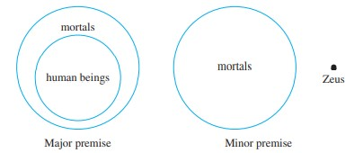
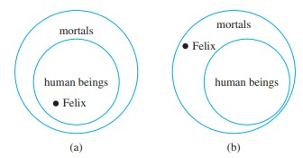

Apply Universal Instantiation, Universal Modus Ponens, and Universal Modus Tollens to predicate logic statements that correspond to the rules’ premises to infer statements implied by the premises.
Identify which strategy use to prove a statement based on its quantifiers.
Devise and attempt multiple different, appropriate proof strategies.
Practice direct proofs and identify common strategies used on those proofs
If a property is true for everything in a set, then it is true for any particular thing in the set. > A famous example: > $$\begin{align*} &\text{All men are mortal}\\ &\text{Socrates is a man}\\ \therefore \;& \text{Socrates is a mortal} \end{align*}$$
### Universal Modulus Ponens we can combine universal statements with modulus ponens
$$\begin{align*} &\forall x \in S, P(x) \implies Q(x) \\ &P(a) \text{ for some } a\in S\\ \therefore \;& Q(a) \end{align*}$$
SImilarly, we can also combine universal statement with modulus tollens
$$\begin{align*} &\forall x \in S, P(x) \implies Q(x) \\ &\lnot Q(a) \text{ for some } a\in S\\ \therefore \;& \lnot P(a) \end{align*}$$
Recall that validity refers to the validity of form. ie, if all the premises are true, the conclusion must be true. However, if the premises are false, the conclusion does not need to be true.
In general, we needs to verify that the conclusion is true if we suppose the premises are true.
Example: prove that universal modulus ponens is valid
To prove that this form of argument is valid, suppose the major and minor premises are both true. [We must show that the conclusion “Q(a)” is also true.] By the minor premise, P(a) is true for a particular value of a. By the major premise and universal instantiation, the statement “If P(a) then Q(a)” is true for that particular a. But by modus ponens, since the statements “If P(a) then Q(a)” and “P(a)” are both true, it follows that** Q(a) is true also**. [This is what was to be shown.]
Example: Consider the following statement $$\begin{align*} &\text{All humans are mortal}\\ &\text{Zeus is not mortal}\\ \therefore \; &\text{Zeus is not a human} \end{align*}$$ We can represent the relationship using the following diagram everything can only fit together one way, hence the argument is valid
(this is an example of modulus tollens)
Let’s look at an example of Invalid reasoning
Example: Consider the following argument $$\begin{align*} &\text{All humans are mortal}\\ &\text{Felix is not mortal}\\ \therefore \; &\text{Felix is a human being} \end{align*}$$ Similarly, we can express the argument using the following diagram: Notice that Felix can be in various positions (it is indeterminate)
As such, we can say this argument is invalid. (this is an example of the converse fallacy)
Just like how simple forms of arguments can have fallacies, universal arguments can also have similar fallacies.
$$\color{red}\begin{align*} &\forall x \in S, P(x) \implies Q(x) \\ &Q(a) \text{ for } a \in S \\ \therefore \; & P(x) \end{align*}$$
$$\color{red}\begin{align*} &\forall x \in S, P(x) \implies Q(x) \\ &\lnot P(a) \text{ for } a \in S \\ \therefore \; & \lnot Q(x) \end{align*}$$
we can use the inference rules in module 4 and convert them into universal form, below is the example of the universal transitivity rule.
$$\begin{align*} &\forall x, P(x) \implies Q(x) \\ &\forall x, Q(x) \implies R(x) \\ \therefore \; & \forall x, P(x) \implies R(x) \end{align*}$$
we gotta prove some things with math, well we need to learn the fundamental math first :smile:.
An integer is even, if and only if, it is divisible by 2. Likewise, an integer is odd, if and only if, it is not divisible by 2. Mathematically, $$\begin{align*} n \text{ is even } &\iff n = 2k \text{ for some integer } k\\ n \text{ is odd } &\iff n = 2k + 1 \text{ for some integer } k \end{align*}$$
An integer is prime if, and only if, n > 1 and for all positive integers r and s, if n = rs, then either r or s equals n (the factors of n are only n and 1). Am integer n is composite if, and only if, n > 1 and n = rs with 1 < r < n and 1 < s < n (there exists prime factors for n). Symbolically, we can say $$\begin{align*} n \text{ is prime} &\iff \forall (r, s) \in \mathbb{Z},\; n = rs \implies (r = 1 \land s = n) \lor (r = n \land s=1)\\ n \text{ is composite} &\iff \exist (r, s) \in \mathbb{Z} \text{ st. } (n = rs) \land (1 < r < n) \land (1 < s < n) \end{align*}$$
Just find a case such that the statement is true ngl.
Show that the negation is true, or symbolically, for $$\exist x \in D, P(x) \implies Q(x)$$ we need to show that the following is true ∀x ∈ D, P(x) ∧ ¬Q(x).
to disprove a statement of the form ∀x ∈ D, P(x) ⟹ Q(x) we just need to show the negation is true: $$\exist x \in D, P(x) \land \lnot Q(x).$$
literally go through every element in the set and show that it works. This is BAD and it wont work most of the time.
To show that every element of a set satisfies a certain property, suppose x is a particular but arbitrarily chosen element of the set, and show that x satisfies the property.
And symbolically, - Show that ∀x ∈ D satisfies P(x) - choose some arbitrary x ∈ D and demonstrate that is satisfies P(x)
Express the statement to be proved in the form, ∀x ∈ D, P(x) ⟹ Q(x)
Begin by supposing x is a particular but arbitrarily chosen member of D for which the hypothesis P(x) is true. (Suppose …)
Show that Q(x) is true by using definition, established results, and inference rules.
If the existence of a certain kind of object is assumed or has been deduced, then it can be given a name, as long as that name is not currently being used to refer to something else in the same discussion. - it literally means you can give an arbitrary object a name if the name is not already taken
To prove the statement of the form “If A1 or A2 or … or An then C”, prove all of the following $$\begin{align*} A_1 \implies C, \\ A_2 \implies C, \\ \vdots \\ A_n \implies C. \end{align*}$$ This process shows that C is true regardless of which A happens to be the case
A real number is rational, if, and only if, it can be expressed as a quotient of two integers with a non-zero denominator. A number that isn’t rational is called irrational. Formally, $$r \text{ is rational } \iff \exists\; a, b \in \mathbb{Z} \text{ such that } r = \frac{a}{b} \land b \not = 0$$
Every integer is a rational number.
The sum of any two rational numbers is rational
if neither a, b = 0, then a × b ≠ 0
the sum of any rational and irrational numnber is irrational (this can be proved with contradiction)
If n and d are integers, then
n is divisible by d if, and only if, n equals d times some integer and d ≠ 0. (every integer divides 0)
We can also say:
n is a multiple of d
d is a factor of n
d is a divisor of n
d divides n
the notation d|n is read “d divides n”. Symbolically, d|n ⇔ ∃k ∈ ℤ such that n = dk ∧ d¬ = 0 the notation d|̸n is read “d does not divide n”
For all integers a and b, if a and b are positive and a|b, then a ≤ b
the only divisors of 1 are 1 and -1
$\forall\; (n, d) \in \mathbb{Z}, \; d \not | n \iff \frac{n}{d} \not \in \mathbb{Z}$
a|b∧b|c ⟹ a|c
Any integer n > 1 is divisible by a prime number
Given any number n > 1, there exists a positive integer k, distinct prime number {p1, p2, ..., pk}, and positive integers {e1, e2, ..., ek} such that, n = p1e1p2e2...pkek Any prime factorized form of n will be identical to this, except maybe for the order.
Given any number n > 1, the standard factored form of n is an expression of the form, n = p1e1p2e2p3e3...pkek where k is a positive integer, {p1, p2, ..., pk} are prime numbers, {e1, e2, ..., ek} are positive integers, and p1 < p2 < ... < pk.
Given any integer n and positive integer d, there exists unique integers q and r such that n = dp + r and 0 ≤ r < d. In other words, any number can be separated into a number-quotient pair + remainder.
Given an integer n and a positive integer d, n div d = n // d, the floor division of n by d $$\begin{align*} n \text{ mod } d = \;& n \;\% \;d, \text{the first non negative remainder}\\ &\text{ when n is divided by d} \end{align*}$$
Any two consecutive integers have opposite parity (odd and even)
The square of any odd integer has the form 8m11 for some integer m.
the absolute value of x, denoted as |x|, is defined as $$|x| = \begin{cases} x \;\;\;\;\;\;\; &\text{ if } x \ge 0 \\ -x \;\;\;\; &\text{ if } x < 0. \end{cases}$$
For every real number r, − |r| ≤ r ≤ |r|
For every real number r, |−r| = |r|.
For all real number x and y, |x+y| ≤ |x| + |y|.
1 There are perfect squares and perfect cubes larger than 1 that are also Fibonacci number
1, 1, 2, 3, 5, 8, 13, 21, 34, 55, 89, 144…
144 is an example of a perfect square (12 * 12)
8 is an example of a perfect cube (2 * 2 * 2)
2 for any ineger, x(x+1) is even
x(x+1) = x2 + x
suppose x is even, x = 2n (2n)2 + 2n = 4n2 + 2n = 2(2n2+n) its divisible by 2, hence even
suppose x is odd, x = 2n + 1 (2n+1)2 + 2n + 1 = 4n2 + 6n + 2 = 2(n2+3n+1) its divisible by 2, hence even
so its always even
Theorem: for all positive integers n, there is an even integer m such that 2n < m < 2n + 3
Suppose we choose an arbitrary integer n, let us choose m = 2n + 2 2n < 2n + 2 < 2n + 3
Theorem: every positive odd integers is the difference beteween two perfect squares
Suppose we pick an arbitrary number n, its consecutive perfect squares is denoted as n2 ∧ (n+1)2 = n2 + 2n + 1 The difference between these two consective squares is n2 + 2n + 1 − n2 = 2n + 1 By defintion, 2n + 1 is an odd number. And since n is any arbitrary integer, 2n + 1 denotes every odd number.